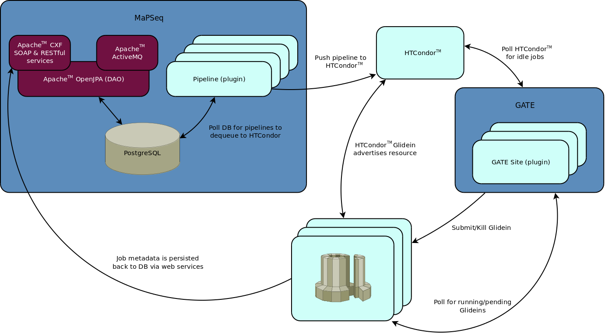

About MaPSeq
The Massively Parallel Sequencing project (MaPSeq), jointly developed by UNC Research Computing and RENCI, is a service oriented application (SOA) that facilitates and manages the execution of the computational aspect of sequencing projects. As an OSGi-based plugin architecture, MaPSeq provides researchers with a framework facilitating the construction, deployment, and activation of sequence analysis workflows. Designed to opportunistically make use of available institution-wide computational resources, MaPSeq enables researchers to perform and manage elaborate analysis workflow on a specified set of data while keeping the data centralized and secure.
Overview

Web Services
MaPSeq service interfaces are available as both RESTful and SOAP services using Apache CXF. The MaPSeq services are used by MaPSeq Modules to persist provenance of job metadata (where job ran, start time, end time, exit code, etc.). The web services can also be used to upload/download files (ie, SampleSheets for CASAVA) or integrated into external clients.
Please refer to the Web Service API for further details.
{kind=link}
Pipelines
MaPSeq is built upon the OSGi framework (a plugin framework), and as such, a Pipeline is a defined as a plugin. More specifically, a MaPSeq Pipeline is a collection of bundles that include, at a minimum, the following:
| a messaging destination/listener | A JMS destination is used as an accessor to trigger WorkflowRun instances. |
| a workflow | The programmatic structure of a collection of executables to be run serially. |
| an executor | The executor dequeues WorkflowRun instances at a specified frequency and quantity. (ie, 10 WorkflowRun instances every 5 minutes) |
| and a features file | The features file is used at deployment time. It describes all the bundles associated with this pipeline (messaging, workflow, and executor). |
Meta-scheduling
HTCondor is used for MaPSeq's meta-scheduling. DAGMan jobs are submitted to a locally configured HTCondor queue once a WorkflowRun instance is dequeued. No jobs will be executed on any compute nodes directly configured to the HTCondor central manager where MaPSeq is installed. Instead, HTCondor Glideins are used to dynamically provision remote compute resources. This allows for the growing or shrinking of compute resources as the demand grows or shrinks.
Grid Access Triage Engine (GATE)
GATE is also built using Apache Karaf (an OSGi based container). Where Pipelines are plugins for MaPSeq, GATE plugins exist for each compute resource. Here is a short list of actively used plugins:
The GATE engine traverses the available plugins and submits HTCondor Glideins to the appropriate cluster's submit host over SSH. GATE will submit Glideins based on number of different factors, the most important of which include:
- number of remote running Glidein jobs
- number of remote idle/pending Glidein jobs
- number of local running jobs
- number of local idle/pending jobs
- number of local held jobs
These Glideins are configured to register themselves back to the HTCondor central manager where MaPSeq is deployed. Once a compute resource is successfully registered, a matchmaking routine can pair a job to a compute element. Matchmaking is performed by HTCondor's negotiator deamon and is based on resolving set of ClassAd (attribues) at both the Job & Machine level.